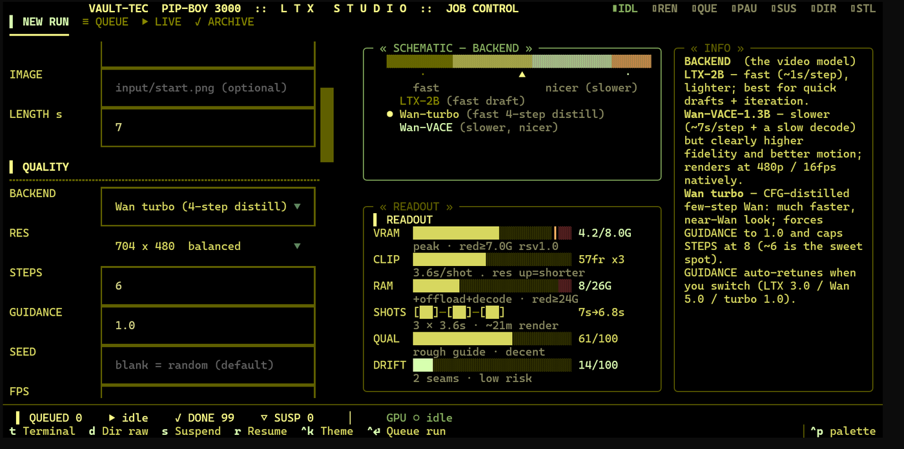
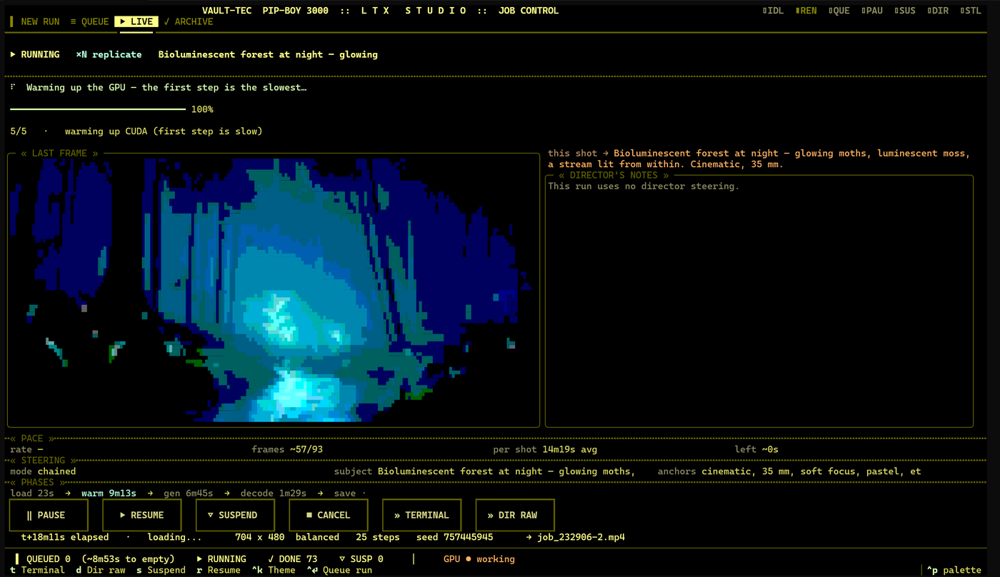

Two models, one 8 GB GPU, and a way to measure what improved.
Open-weight video models want far more GPU memory than a laptop has, and chaining short shots into a sequence makes colour and style drift from one to the next. Judging either by eye is unreliable. This studio fits two models on an 8 GB card and records seam and drift telemetry for every run, so a pipeline change can be compared instead of guessed at.

The orchestration, the UI and the measurement layer.
The generation models were trained by others. Everything around them is mine: one terminal UI where two open-weight backends share the card, a resident 4-bit Qwen3-VL model that translates shot descriptions into generation settings, and an archive of every run’s settings and telemetry for comparison.
- Fits the card.Two backends resident on 8 GB through quantization and offloading, with a VRAM estimate shown before each render.
- Drift control.AdaIN latent anchoring between shots, plus a custom colour-matching pass.
- Seam and drift telemetry.Every run records how well consecutive shots join and how far colour and style wander.
- Blind A/B harness.Pipeline changes are compared without knowing which clip came from which, so the measurement isn’t steered by the eye.
Two clips from the studio.
Generated on the same 8 GB card. Left: a bioluminescent forest at night, 35 mm. Right: fireflies over a glowing stream, 64 fps after interpolation.

Day one and day fourteen, same prompt.
The first clip the project produced (June 22, a smoke test) beside a day-fourteen run of the same dog-on-a-beach prompt (July 6), on the same card. This shows the project’s trajectory, not a controlled comparison: the backend changed between runs.
Architecture, the marker protocol, running it
Full detail in the README: github.com/harrisonwolf/ltx-studio. More screenshots and sample clips are in the repo.
Ownership
I built the orchestration, terminal UI and measurement layer, including the seam and drift telemetry and the blind A/B harness. The video and vision-language models were trained by others. The studio grew out of an earlier AnimateDiff pipeline adapted to the same card, where I directed coding-agent implementation of its attention backport, LCM scheduler and LoRA merge.